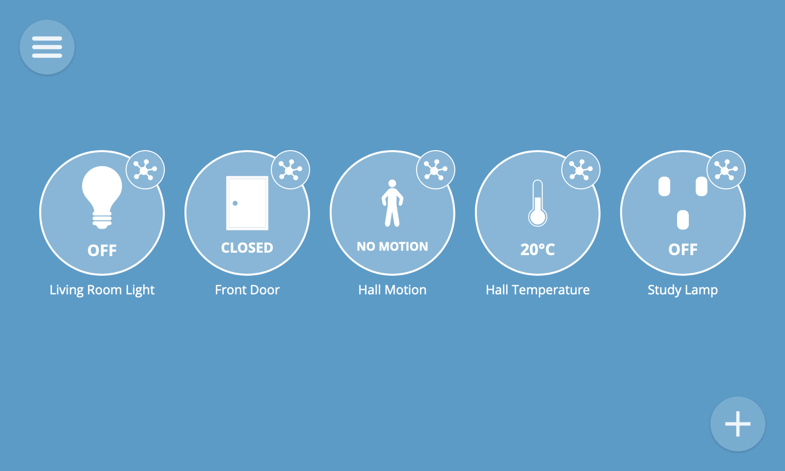
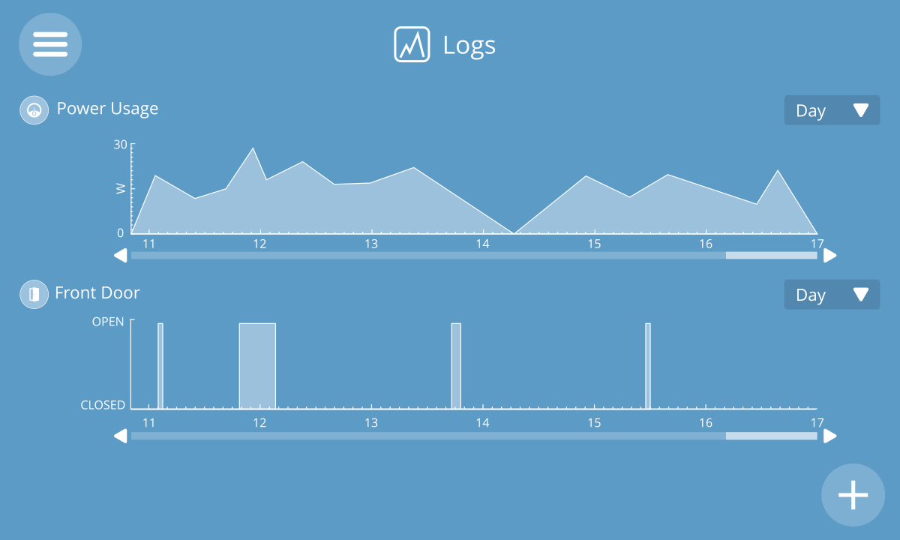
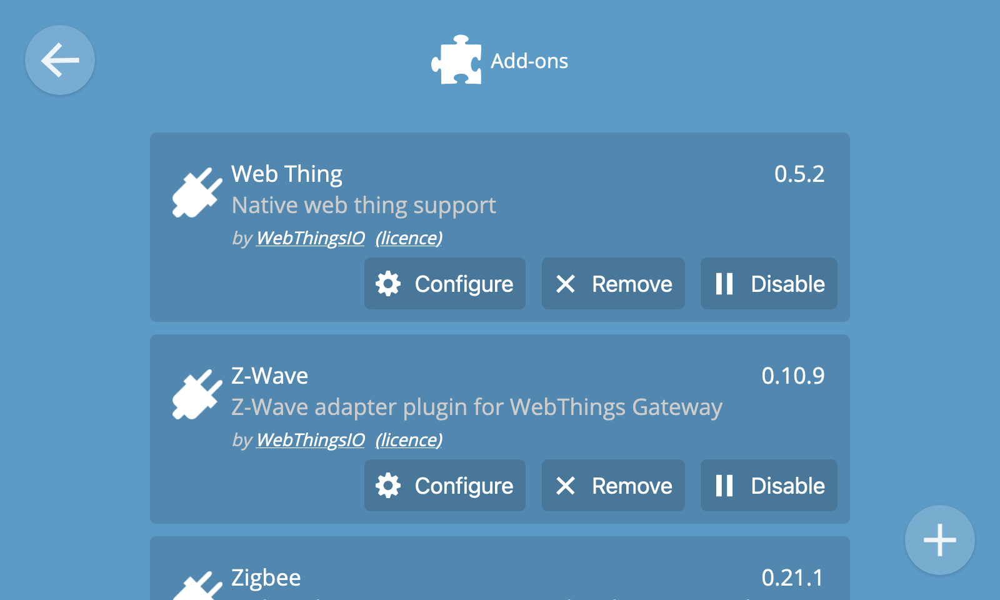

Host your own private smart home
DownloadWebThings Gateway is a software distribution for smart home hubs focused on privacy, security and interoperability.

Unified Web Interface
Monitor and control all your smart home devices via a unified web interface.

Rules Engine
Create "if this then that" style rules to automate your home with a simple drag and drop interface.

Floorplan
Lay out all your devices on an interactive floorplan of your home for at-a-glance status and control.

Logging
Log sensor data over time to identify trends, spot anomalies and make optimisations.

Add-ons
Add compatibility with more devices and protocols with adapter add-ons.
Download
WebThings Gateway
for Raspberry Pi
Download 1.1Documentation »
WebThings Gateway
for Docker
Download 1.1Documentation »
Built on W3C Web of Things standards.